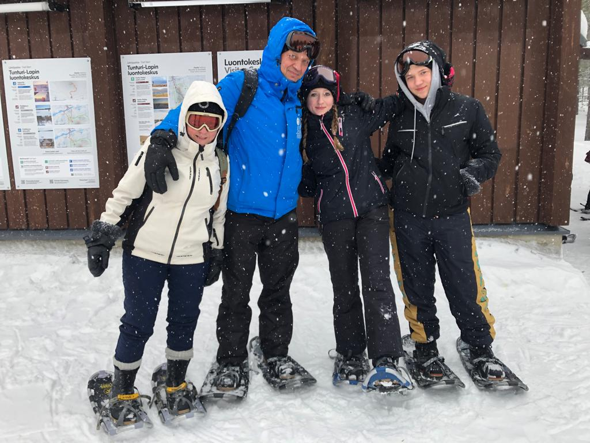
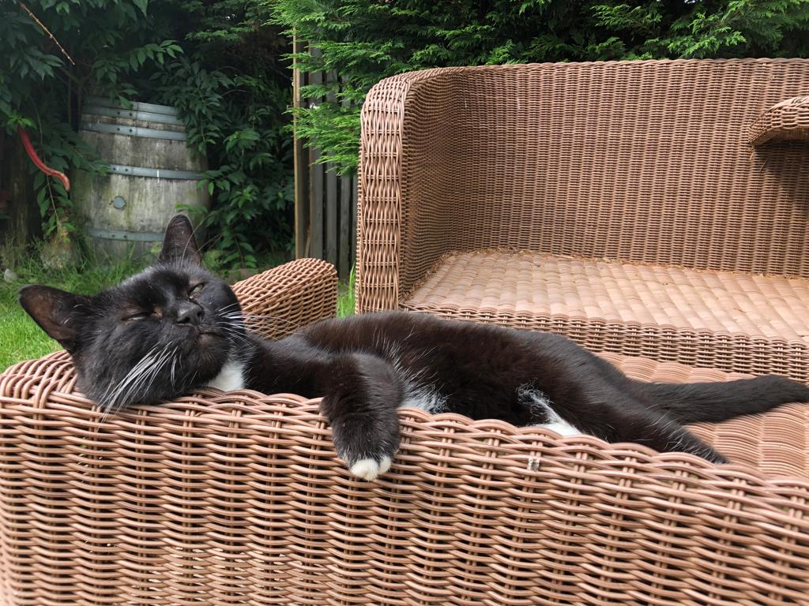
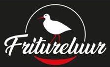

Mijn Profiel
- 17 jaar oud
- Geboren in Goes en woon in Kerkwerve
- Ik woon samen met mijn moeder, vader en mijn zusje
- Ik heb ook een aantal huisdieren, namelijk 2 kippen, een konijn en een kat Tom
- Mijn hobbies zijn: Gamen, series kijken en tijd spenderen met mijn vrienden
- Ik werk bij snackbar Fritureluur in Serooskerke (Schouwen-Duiveland)


